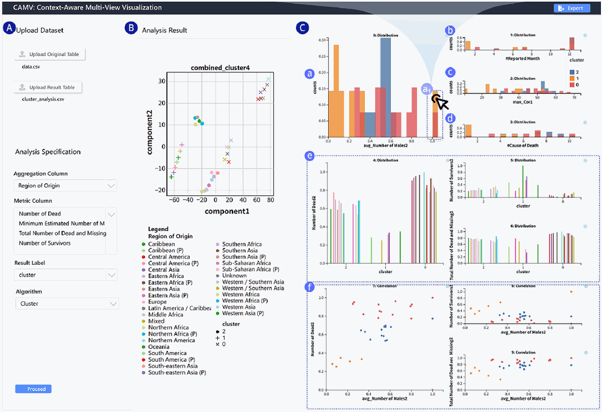
CAMV: A Framework for Context-Aware Multi-View Visualization of Data Analysis Results
Data Science and Engineering.
I am a tenure-track associate professor at School of Intelligence Science and Technology, Nanjing University, and I am also a member of PRLab@NJU. Previously, I have worked at Huawei as a "Genius Youth" (“天才少年”计划) where I led the team to build Huawei's first intelligent, AI-augmented and easy-to-use data visual analysis platform DataArts Insight. I was also a postdoctoral research associate at New York University (NYU), advised by Prof. Claudio Silva and Prof. Enrico Bertini and a visiting scholar worked with Prof. Hanspeter Pfister at Harvard University.
I earned my Ph.D. in Department of Electronic and Computer Engineering from the Hong Kong University of Science and Technology (HKUST) in 2019, where I worked with my supervisor Prof. Huamin Qu. Prior to my Ph.D. studies, I received my B.S. in Electronic Science and Engineering from Nanjing University (NJU) in 2015.
My research interests, broadly, are AI-Driven Big Data Analytics, Visulization, Human-Computer Interaction and AI4Science. Specifically, I am interested in domains of visual anomaly detection, explainable AI, automated data insights, temporal data analytics and healthcare. My representative works include the ECGLens and Clouddet for visual anomaly detection in healthcare and cloud computing, respectively, the mTseer for explainable AI and a Survey for narrative visualization. I have won the ACM CHI 2018 Best Paper Honorable Mention Award.
We welcome undergraduate/graduate students, post-docs, research assistants and visiting interns/scholars. Please drop me an email if you are interested in our group.
课题组长期欢迎优秀的同学加入：
欢迎有AI、大数据分析、可视化和人机交互方向科研经历、学科竞赛获奖的同学邮件联系我。此外也接收对相关方向感兴趣的本科同学进组学习与科研。

Data Science and Engineering.
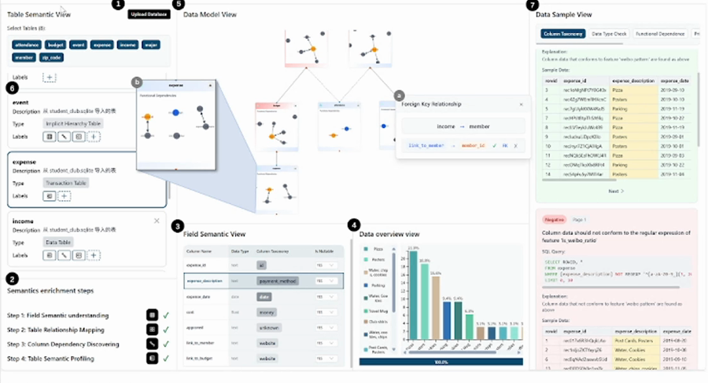
Proceedings of the SIGCHI Conference on Human Factors in Computing Systems.
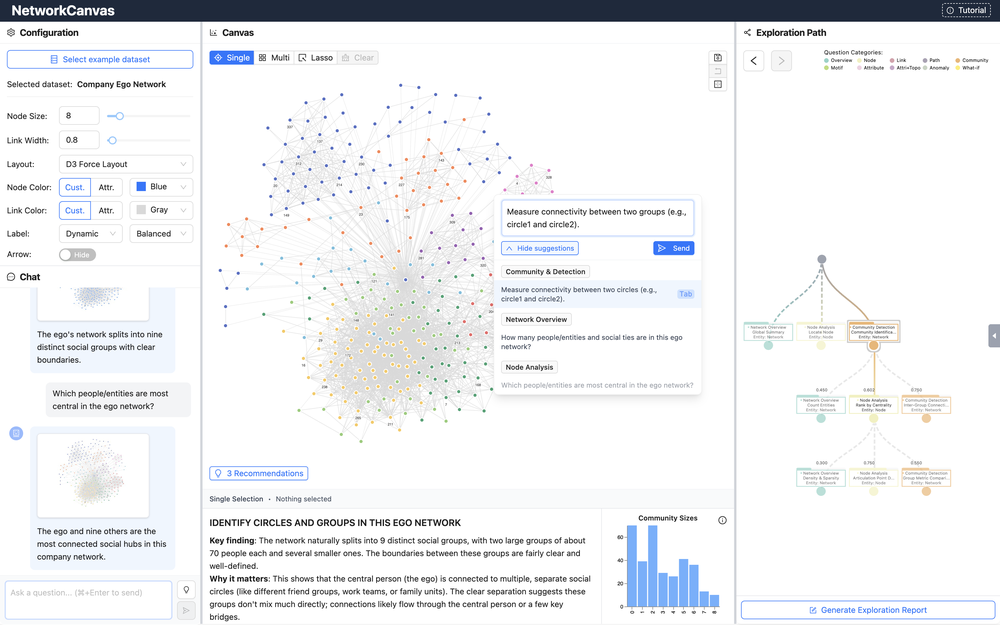
Proceedings of the SIGCHI Conference on Human Factors in Computing Systems.
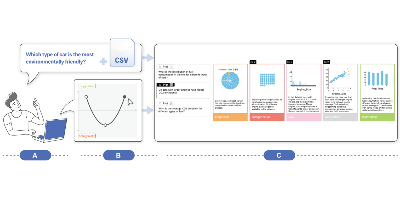
Proceedings of the ACM International Conference on Intelligent User Interfaces.
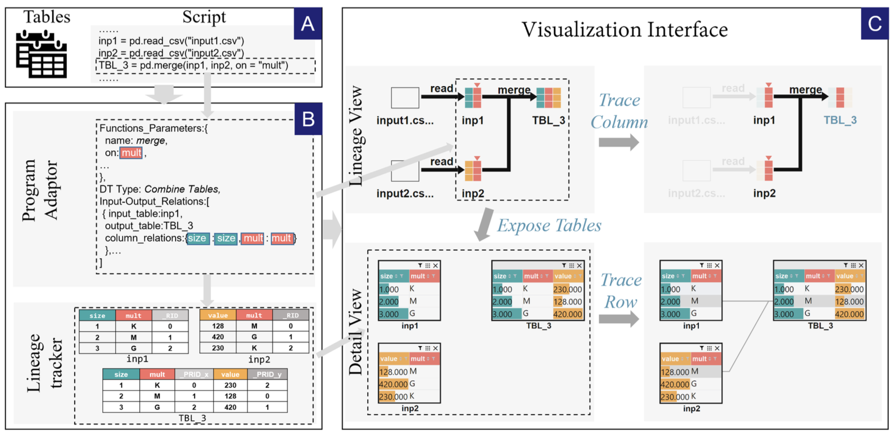
IEEE Transactions on Visualization and Computer Graphics.
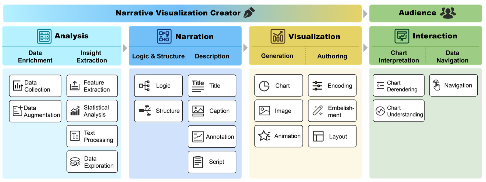
IEEE Transactions on Visualization and Computer Graphics.
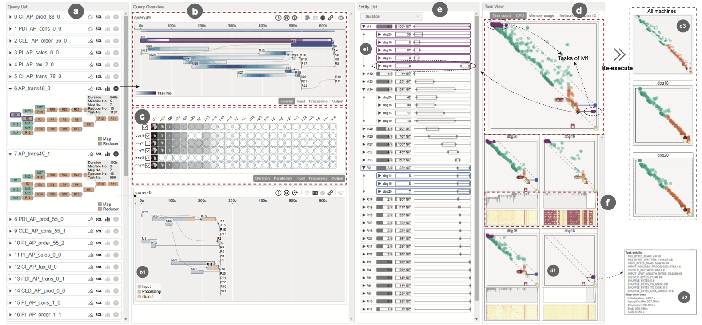
IEEE Transactions on Visualization and Computer Graphics.
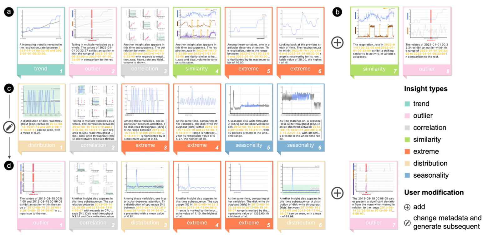
IEEE Transactions on Visualization and Computer Graphics.
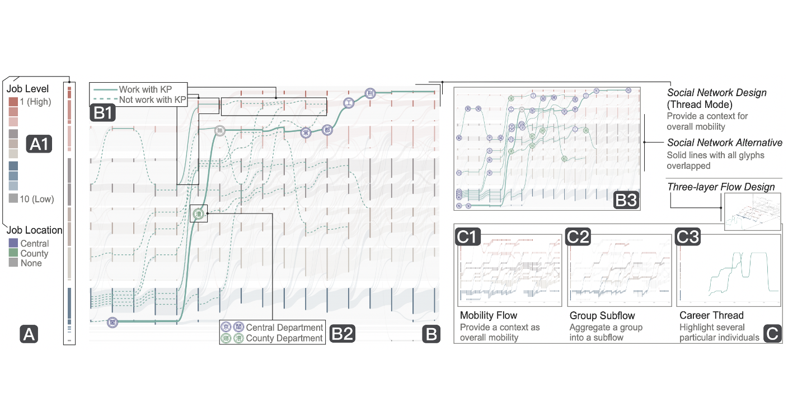
IEEE Transactions on Visualization and Computer Graphics.
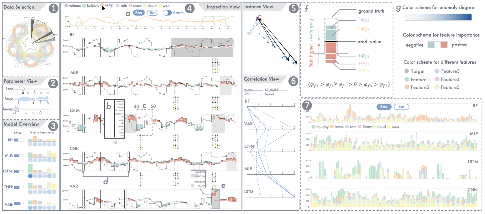
Proceedings of the SIGCHI Conference on Human Factors in Computing Systems.
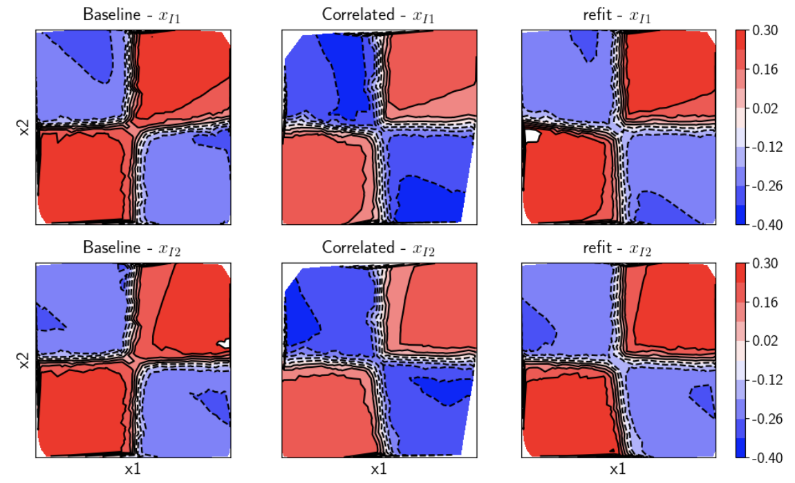
ICML workshop on Human Interpretability in Machine Learning (WHI).
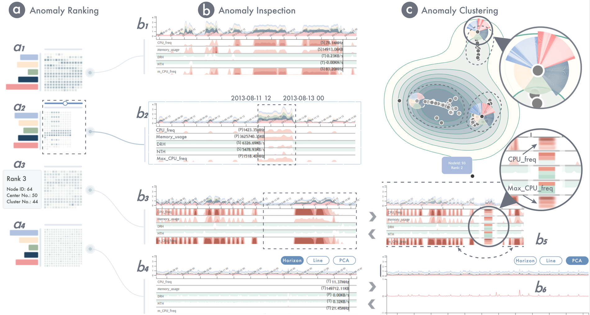
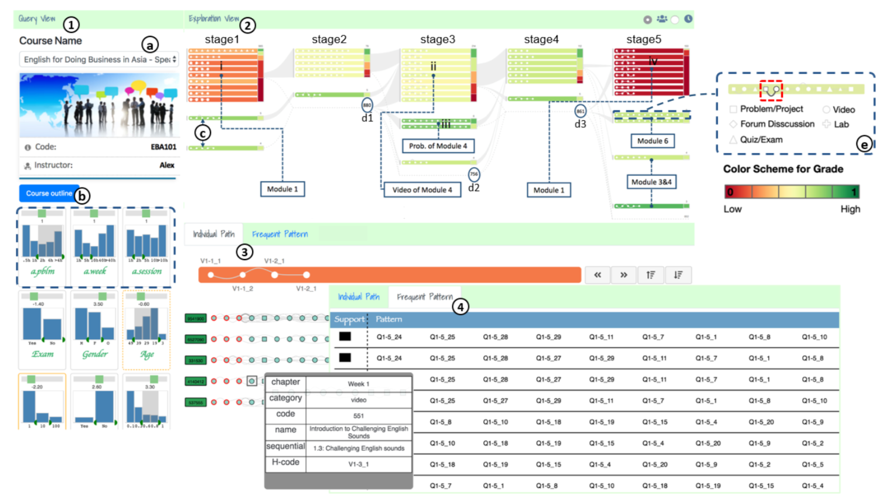
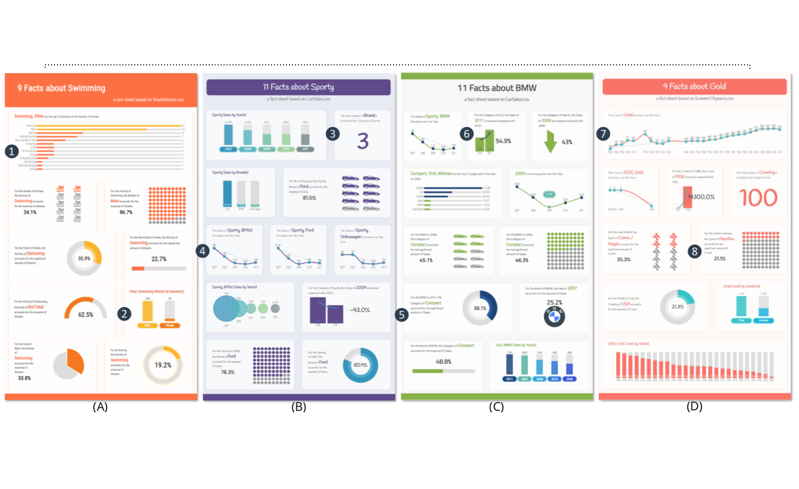
IEEE Transactions on Visualization and Computer Graphics.
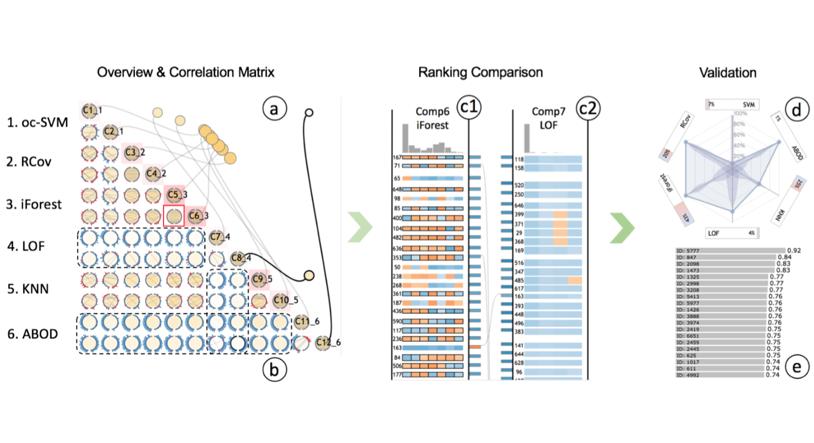
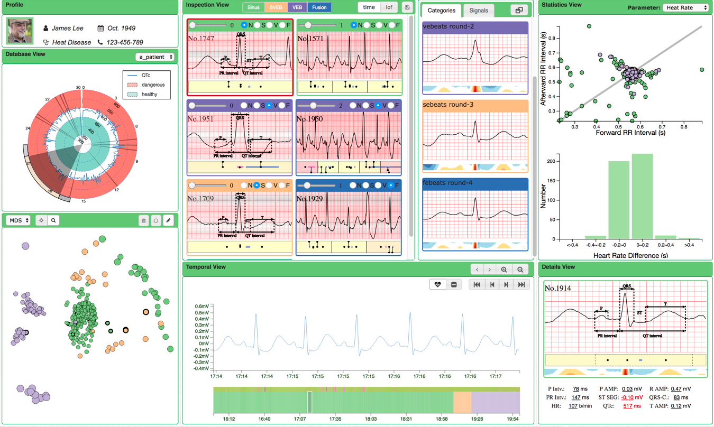
Proceedings of the SIGCHI Conference on Human Factors in Computing Systems.
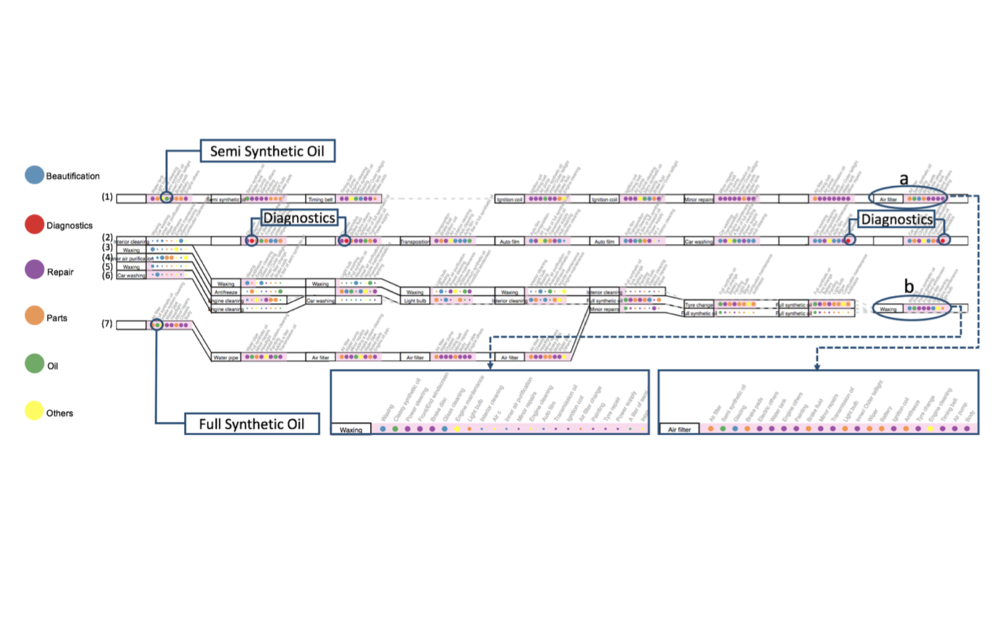
Proceedings of the IEEE Visual Analytics Science and Technology.
ACM CHI Conference
Nanjing University
Nanjing University
Mitacs
Baosteel Group, Nanjing University,
for 2 of Sophomores in Nanjing University
Ministry of Education of the People’s Republic of China
Visiting Scholar (with Prof. Enrico Bertini and Prof. Claudio Silva), VIDA Lab
Research Associate (with Prof. Hanspeter Pfister), Visual Computing Group
Research Intern, Software Analytics Group
Ph.D Candidate, VisLab
Visiting Scholar (with Prof. Nan Cao), iDVx Lab
Research Assistant, Microelectronics Design Institute
Summer Intern (with Prof. Kirk), Department of Material Engineering
Tongji University, Shanghai, China
Huawei Partner and Developer Conference (HDPC), Hangzhou, China
ACM CHI Conference, Yokohama, Japan
IEEE VIS Conference, Vancouver, Canada
IEEE VIS Conference, Berlin, Germany
ACM CHI Conference, Montreal, Canada